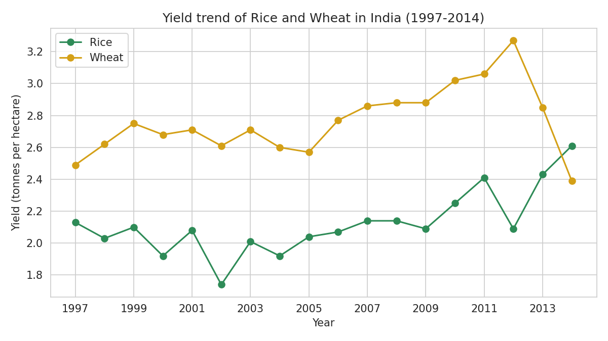
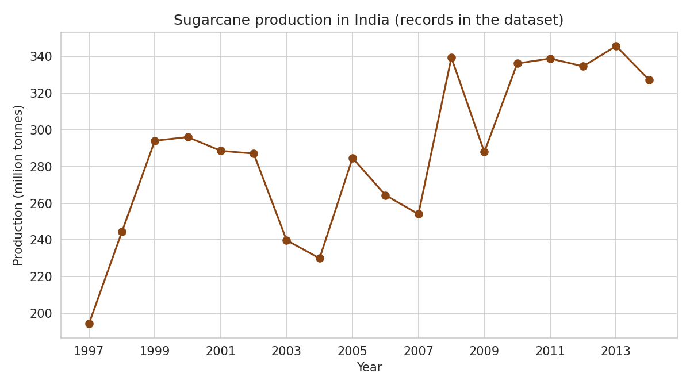
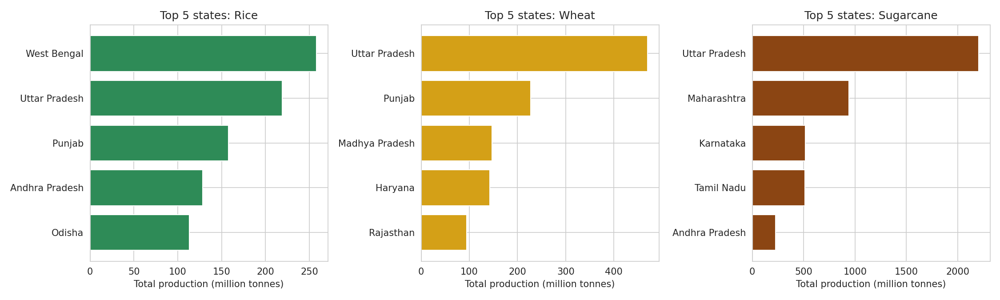
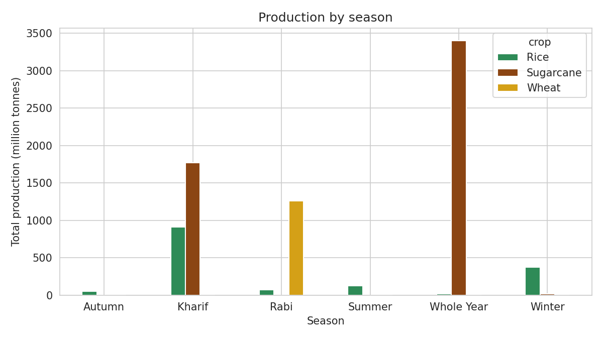
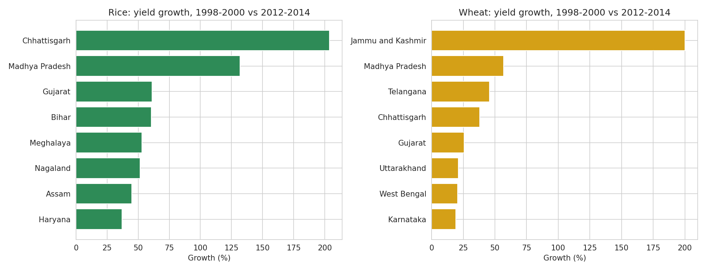
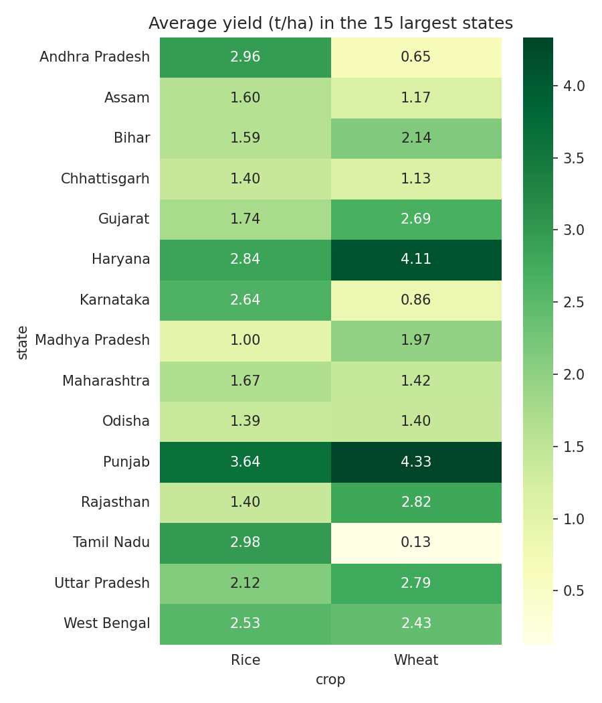
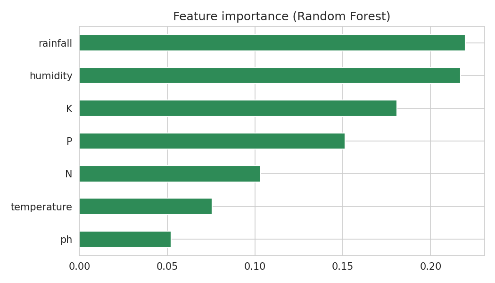
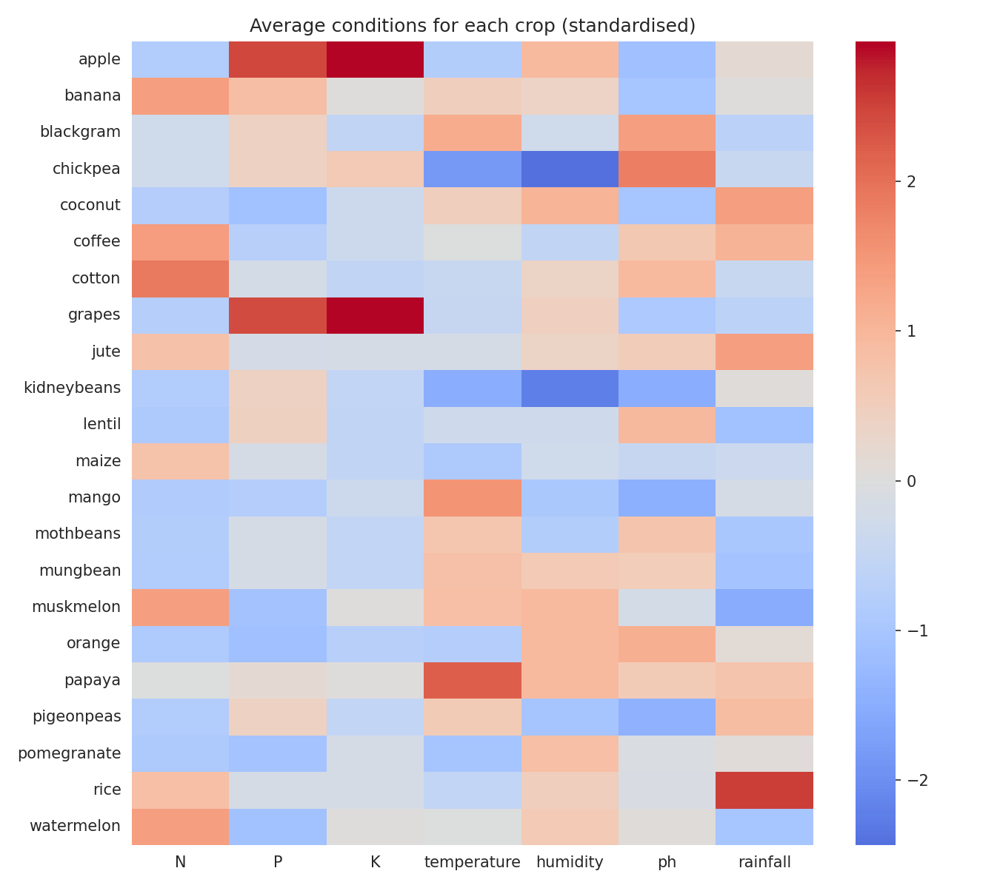
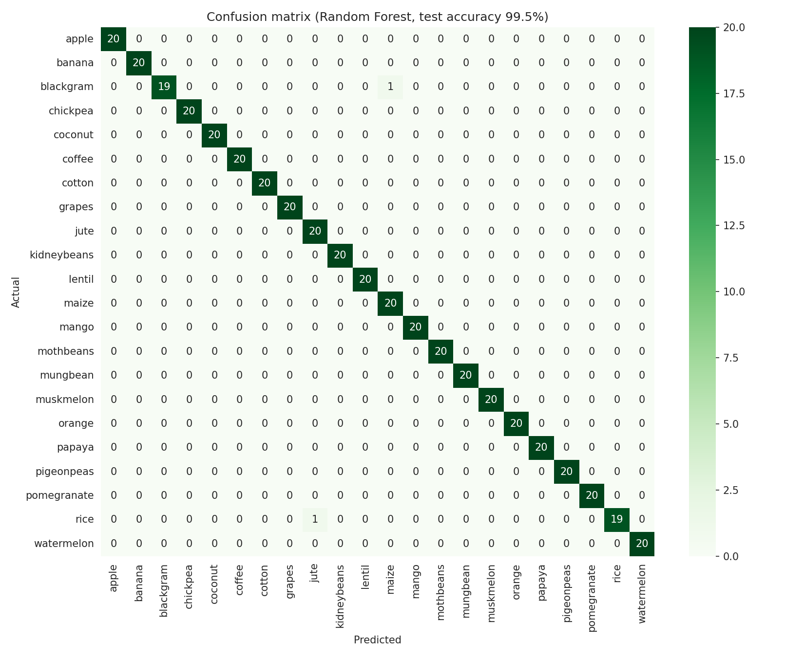
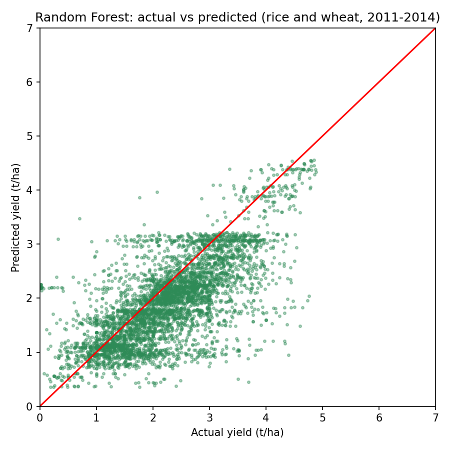

Rice and wheat yield (t/ha). The wheat drop in 2013-2014 may be a data coverage issue.

Sugarcane production in the dataset

Top 5 states for each crop (total production 1997-2014)

Production by season
| Crop | State | Yield (t/ha) |
|---|---|---|
| Rice | Punjab | 3.64 |
| Rice | Tamil Nadu | 2.98 |
| Rice | Andhra Pradesh | 2.96 |
| Sugarcane | Tamil Nadu | 105.63 |
| Sugarcane | Karnataka | 89.87 |
| Sugarcane | Maharashtra | 81.50 |
| Wheat | Punjab | 4.33 |
| Wheat | Haryana | 4.11 |
| Wheat | Rajasthan | 2.82 |

Yield growth: 1998-2000 vs 2012-2014

Average yield in the 15 largest states
The model uses nitrogen, phosphorus, potassium, temperature, humidity, soil pH and rainfall. Enter your own values in the live app to get a recommendation.
Open Live App (start it first with streamlit run app.py)
| Model | Accuracy |
|---|---|
| Logistic Regression | 96.8% |
| KNN | 96.6% |
| Decision Tree | 98.5% |
| Random Forest | 99.4% |

Rainfall, humidity and potassium are the most useful features

Average soil and climate conditions for each crop

Confusion matrix on the test set
A Random Forest predicts yield (tonnes per hectare) from state, crop, season, year and area. It is trained on 1997-2010 and tested on 2011-2014.
| Model | MAE rice+wheat (t/ha) | R² all crops |
|---|---|---|
| Baseline (crop average) | 0.78 | 0.71 |
| Linear Regression | 0.64 | 0.81 |
| Random Forest | 0.55 | 0.89 |

Actual vs predicted yield (rice and wheat)
GreenIndia started as a small crop-information website (HTML and PHP). It has now been rebuilt as a data analytics project:
Data: Ministry of Agriculture and Farmers Welfare (data.gov.in, via Kaggle) and the Kaggle Crop Recommendation dataset.